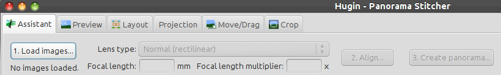

Hugin Assistant tab
The Hugin assistant automates nearly everything needed to create a panorama; just follow the three steps described below the partial screen capture of the top half of the screen:
[*]
1. Load images...
Click on the Load images... button to select the photos you want to use in your panorama.
This tries to identify the field of view[*] of your photos by looking at (EXIF) information stored by the camera itself. If this fails, you need to enter the field of view manually, or let Hugin calculate it from the Focal Length and Focal length multiplier.
Also select a matching Lens type from the drop-down list. If you are unsure, try the default Normal (rectilinear).
2. Align...
Clicking on Align... will use an automatic tool (the one set as Default in the Control Point Detectors tab of the Preferences) to match images, then use the internal Hugin optimiser to align them, correct exposure and white balance.
A preview of the result will be displayed in the bottom half of this screen. If this preview looks good, proceed with the third step (the Create panorama... button), otherwise you will need to make some changes to the images and optimisations of the project in the other tabs.
3. Create panorama...
Finally, use Create panorama... to stitch the panorama to an image file with standard quality settings. If you click the Create panorama button the new stitch popup sub-screen will be displayed. This will give you an easy to understand overview of the options.

![[*]](http://wiki.panotools.org/File:Hugin2013_assistant_tab_tophalf.png){kind=link}
![[*]](http://wiki.panotools.org/File:SimpleGui_stitch_popup.png){kind=link}
Note that in Simple User interface mode only the top option Exposure corrected, low dynamic range is enabled.
Settings
A tab in the Preferences dialog (available from the menu) allows you to customise some settings of the assistant.
Overview and Preview
Both the Overview and the Preview canvas will be displayed on all tabs of the Simple Interface, being this Hugin Assistant tab, the Hugin Preview tab, the Hugin Layout tab, the Hugin Projection tab, the Hugin move drag tab and the Hugin Crop tab.
Overview
![[*]](http://wiki.panotools.org/File:Hugin2013_overview.png){kind=link}
The Overview represents an interactive preview of the panorama.
Note: Slightly above the image of the sphere you see a dropdown currently mentioning mode: Panosphere (which is the default mode). This dropdown menu is only available in Expert mode. In Expert mode you can choose between the default Panosphere and the Mosaic plane mode.
To show or hide the docked Overview window, check or uncheck the "Overview" checkbox option from the "View" menu. Zoom it by dragging the handle located at the center of the border to the preview canvas.
To hide or show the grid in both the overview and the preview canvas, check or uncheck the "Grid" checkbox option from the "View" menu.
Clicking the small pin icon in the header of the docked Overview area (or dragging the Overview title bar) will switch to a floating window instead. To put that floating window back in a docked position, just drag it in either the top, bottom, left or right boundary of the preview's actual image area.
The default mode is a Panosphere to display typical panoramas and can be used to e.g. easily check for errors in the nadir or zenith regions.
Preview
The preview canvas displays a representation of the final stitched output panorama. Use the scroll bars to change the horizontal and vertical Field of View.